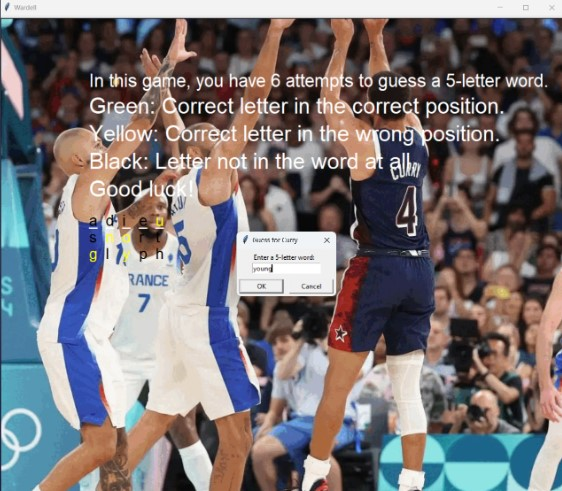
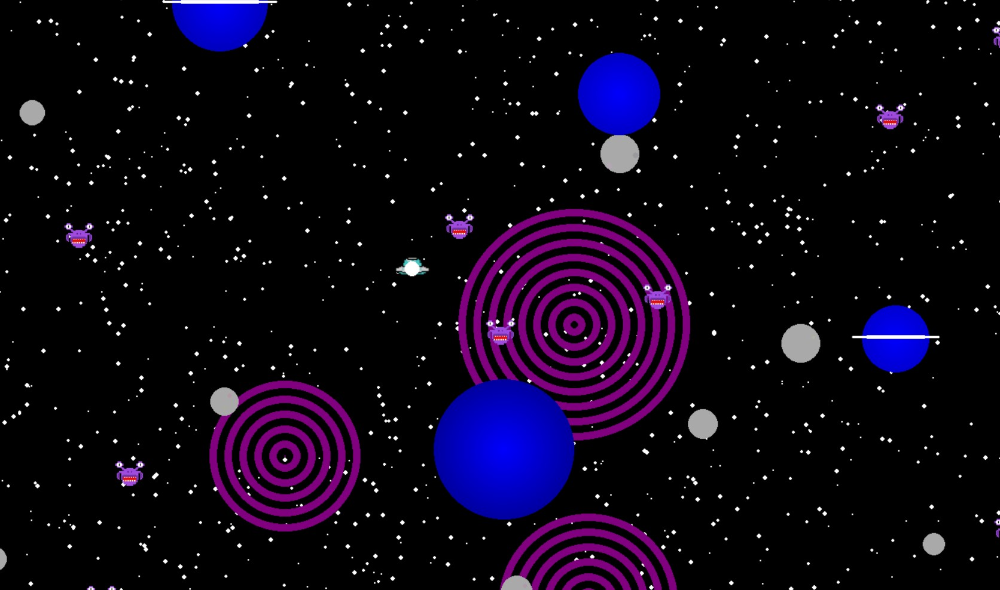
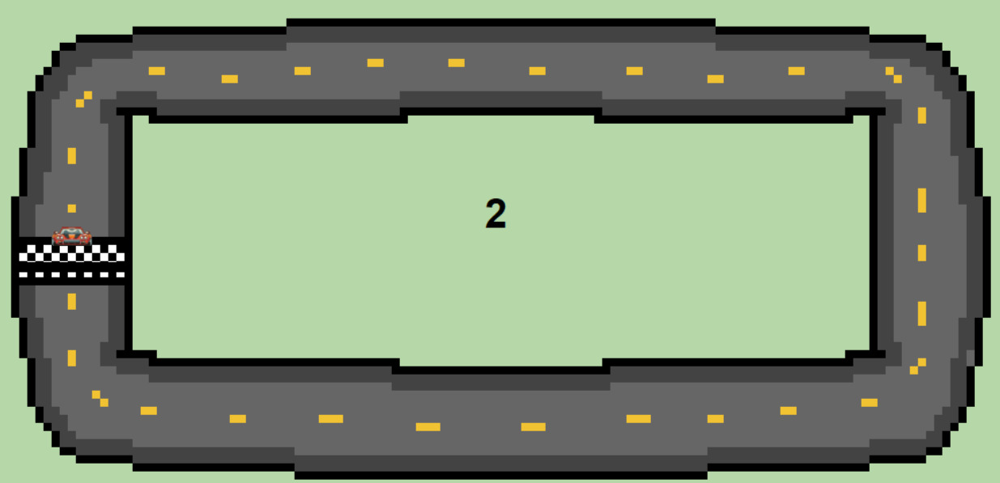
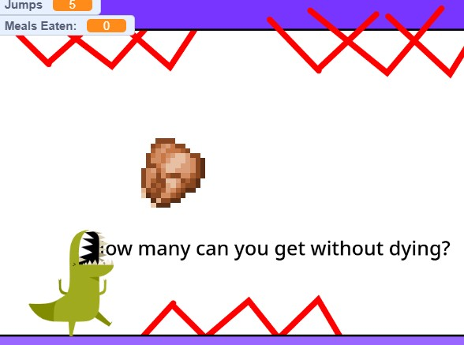
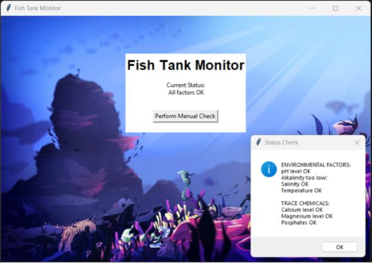
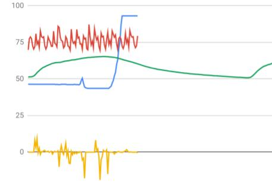

Home
Portfolio
About Me
PLTW Projects
1.1.9 "Algorithms and Art"

This is a game called Wardell that Caleb and I created. It is wordle, but with one of the greatest olympic moments ever.
1.2.5 "Shall We Play a Game?"

The game we created was a space-themed one in which a ufo (the player) had to save its companions (the aliens), collecting 10 to succeed.
\
1.3.1 "Artistic Expression Through Code

The game we created was a racing game in which the user had to make four laps around a track to win, in which the game was an e-card.
Scratch Game Project

The dinosaur and minecraft themed game we created in scratch has the objective of collection more chicken the energy expelled for jumping.
AP Computer Science Portfolio Project
For my AP class portolfio, I made a Dance Dance Revolution inspired game where players click arrows to the beat.
2.1.6 "A pHishy Fish Tank"

For our project, we had to indentify what variables were incorrectly processed [alkaline, magnesium, and temperature].
3.1.6 "Rover Phone Home"

The rover is likely in desert plains, as gyroscope data indicates steady, regularly shifting winds.